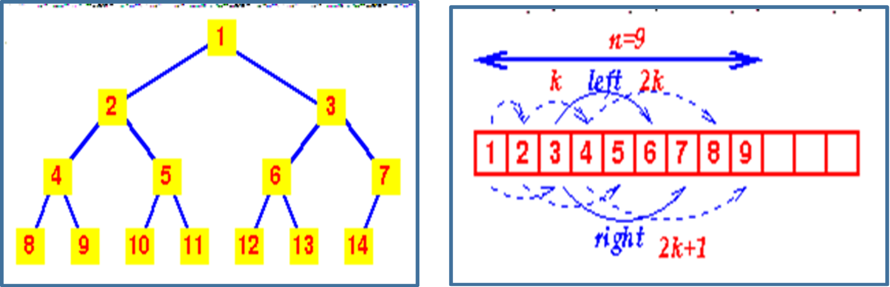

Lesson 8 : Introduction to Trees
What is trees?
Uses of Trees:
The Conceptual Picture of a Tree:

PATH

LENGTH
HEIGHT
The height of a tree is the length of the longest path from the root to a leaf; for the above example, the
height is 4 (because the longest path from the root to a leaf is A → C → E → G,
or A → C → E → J). An empty tree has height = 0.

DEPTH
the depth of J is 3
the depth of D is 2
the depth of A is 0
Given two connected nodes like this:
 Node A is called the parent, and node B is called the child.
Node A is called the parent, and node B is called the child.
SUBTREE

A subtree of a given node includes one of its children and all of that child's descendants. The descendants of a node N are all nodes reachable from N (N's children, its children's children, etc.). In the original example,node
A has three subtrees:
1. B, D
2. I
3. C, E, F, G, J
BINARY TREE
Two examples of binary trees that are different:

BINARY SEARCH TREE
Here are some properties of a Binary Search Tree;
BINARY SEARCH TREE OPERATIONS
Creating Binary Trees
struct binTree {
int data;
struct binTree * right, * left;
};
Deleting Binary Trees
void deltree(node * tree)
{
if(tree) {
deltree(tree->left);
deltree(tree->right);
free(tree);
}
}
The function deltree() goes to the bottom of each part of the tree, that is, searching while there is a non-null node, deletes that leaf, and then it works its way back up.
Deleting Binary Trees
Case 1 : The node to delete is a leaf node

This is a very easy case. Just delete the node. We are done.
Case 2 : The node to delete is a node with one child.
Case 2 : The node to delete is a node with one child.
Case 3: The node to delete is a node with two children
Case 3: The node to delete is a node with two children

Case 3: The node to delete is a node with two children
Inserting Into Binary Trees
void insert(node ** tree, int val){
node *temp = NULL;
if(!(*tree)){
temp = (node *)malloc(sizeof(node));
temp->left = temp->right = NULL;
temp->data = val;
*tree = temp;
return;
}
if(val < (*tree)->data){
insert(&(*tree)->left, val);
}
else if(val > (*tree)->data){
insert(&(*tree)->right, val);
}
}
Searching the Binary Tree
node* search(node ** tree, int val){
if(!(*tree)){
return NULL;
}
if(val < (*tree)->data){
search(&((*tree)->left), val);
}
else if(val > (*tree)->data){
search(&((*tree)->right), val);
}
else if(val == (*tree)->data){
return *tree;
}
}
Sample Main Function
void main()
{
node *root;
node *tmp;
//int i;
root = NULL;
/* Inserting nodes into tree */
insert(&root, 9);
insert(&root, 4);
insert(&root, 15);
insert(&root, 6);
insert(&root, 12);
insert(&root, 17);
insert(&root, 2);
/* Printing nodes of tree */
printf("Pre Order Display\n");
print_preorder(root);
printf("In Order Display\n");
print_inorder(root);
printf("Post Order Display\n");
print_postorder(root);
/* Search node into tree */
tmp = search(&root, 4);
if (tmp)
{
printf("Searched node=%d\n",
tmp->data);
}
else
{
printf("Data Not found in
tree.\n");
}
/* Deleting all nodes of tree */
deltree(root);
}
Binary Tree Traversal
This can be summed up as;
1. Visit the root node (generally output this)
2. Traverse to left subtree
3. Traverse to right subtree
F, B, A, D, C, E, G, I, H

void print_preorder(node * tree)
{
if (tree)
{
printf("%d\n",tree->data);
print_preorder(tree->left);
print_preorder(tree->right);
}
}
1. Traverse to left subtree
2. Visit root node (generally output this)
3. Traverse to right subtree
Output:
A, B, C, D, E, F, G, H, I

void print_inorder(node * tree)
{
if (tree)
{
print_inorder(tree->left);
printf("%d\n",tree->data);
print_inorder(tree->right);
}
}
1. Traverse to left subtree
2. Traverse to right subtree
3. Visit root node
(generally output this)
And outputs the following:
A, C, E, D, B, H, I, G, F
void print_postorder(node * tree) {
if (tree)
{
print_postorder(tree->left);
print_postorder(tree->right);
printf("%d\n",tree->data);
}
}
EXPRESSION TREES
Expression
1. An integer constant
2. A variable name
3. An expression enclosed in parentheses
4. A sequence of two expressions separated by an operator
y = 3 * (x + 1)
y = 3 * (x + 1)
y = 3 * (x + 1)

y = 3 * (x + 1)
1. Integer nodes
2. Identifier nodes
3. Compound nodes
Example 1: Tree representing the expression a/b+(c-d)e.
Example 2: Problem: (35-(3*(3+2)))/4
Example 2: Solution:
(35-(3*(3+2)))/4

Example 2:

Why did we do all this?
=> We only explored a small part of parsing (expressions)
=> The result of parsing a program is a tree
=> Parsing is a pre-requisite step to generating executable code
Postfix expressions are evaluated using a stack:
=> The stack only contains numbers
Example 2: Step 3: stack


Why is this useful?
First, let's list the stack operations in the order they were used in the previous example:
We can think of these as instructions for operating a stack-based calculator.
HEAPS
COMPLETE TREE
Is one in which there are no gaps between leaves. For instance, a Tree with a root node that has only one child must have its child as the left node. More precisely, a complete tree is one that has every level filled in before adding a node to the next level, and one that has the nodes in a given level filled in from left to right, with no breaks.
Heaps are based on the notion of a complete tree, for which we gave an informal definition
HEAPS
a. it is empty or
b. the key in the root is larger or smaller than that in either child and both subtrees have the heap property.
a. the min-heap property: the value of each node is greater than or equal to the value of its parent, with the minimum-value element at the root.
b. the max-heap property: the value of each node is less than or equal to the value of its parent, with the maximum-value element at the root.
MIN- HEAP / MAX HEAP
HEAPS
OPERATIONS
ADDITION
STORAGE OF COMPLETE TREES

EXAMPLE 1